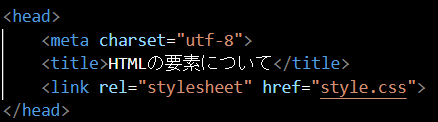
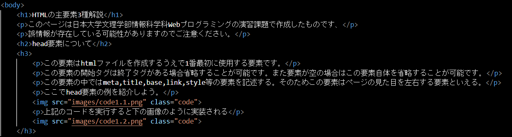
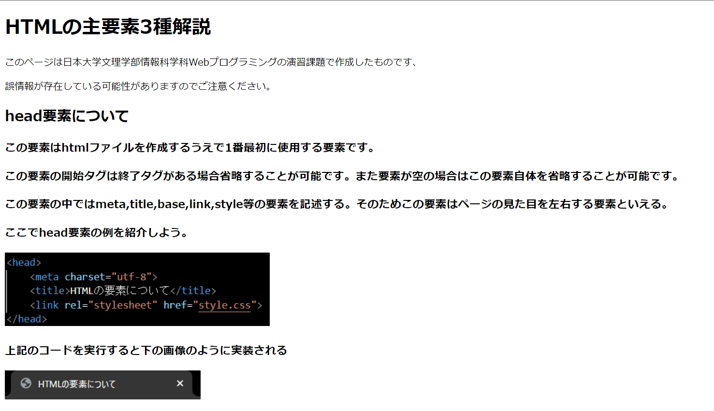
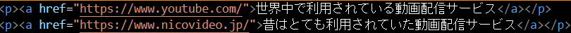

このページは日本大学文理学部情報科学科Webプログラミングの演習課題で作成したものです、
誤情報が存在している可能性がありますのでご注意ください。
この要素はhtmlファイルを作成するうえで1番最初に使用する要素です。
この要素の開始タグは終了タグがある場合省略することが可能です。また要素が空の場合はこの要素自体を省略することが可能です。
この要素の中ではmeta,title,base,link,style等の要素を記述する。そのためこの要素はページの見た目を左右する要素といえる。
ここでhead要素の例を紹介しよう。
上記のコードを実行すると下の画像のように実装される
この要素はページの中身を構成する要素です。
この要素の開始タグは終了タグがある場合省略することが可能です。また要素が空の場合はこの要素自体を省略することが可能です。
htmlファイルを作成する場合この要素は2つ以上存在してはならない。
この要素の中では文章や画像等ページの中身を構成する要素を記述する。
ここでbody要素の例を紹介しよう
上記のコードを実行すると下の画像のように実装される
この要素はテキストにハイパーリンク適用することができる。
href属性を持っていた場合に指定した場所に飛ぶことができる。
ここでa要素の例を紹介しよう
上記のコードを実行すると下の画像のように実装される
©日本大学文理学部情報科学科2年 Wato Ito